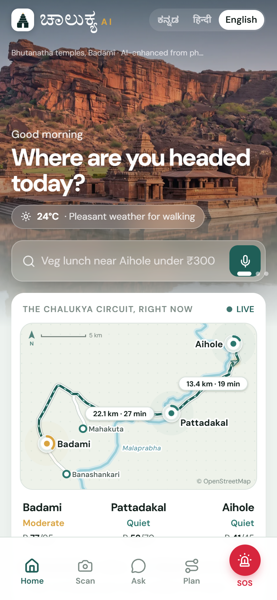
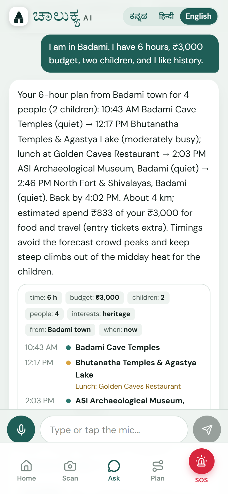
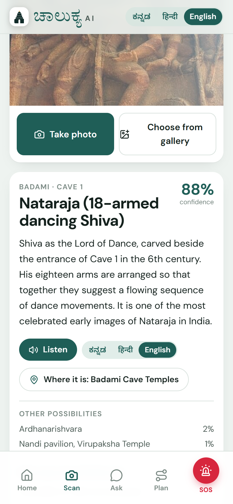
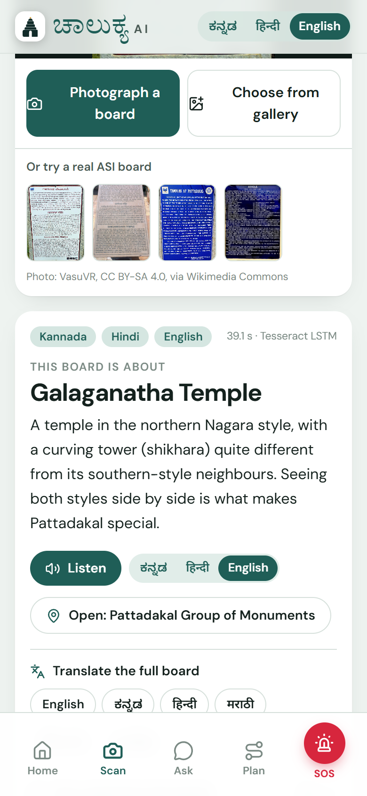

One offline-first AI companion for every visitor to Badami, Pattadakal, Aihole and the whole of Bagalkot district, and a live command centre for the people who run it.
chalukya-ai.vercel.appScan to try. No install; works offline after the first visit.

Live circuitreal roads, crowds, parking

Ask the guide“6 hours, ₹3,000, two kids…”

Scan a sculpturerecognised on the phone

Read a board3 scripts, 6 languages
What it does
Live circuit mapReal roads between the three sites; crowd, free parking and drive time on every pin.
Ask the guideKannada, Hindi or English, typed or spoken; answers only from verified sources.
Crowd-smart plannerOne sentence in, a timed plan out: fewer crowds, less driving, no midday climbs.
Scan a sculpture25 sculptures and temples recognised on the phone, offline, with the story.
Read a boardOCR of Kannada, Hindi and English boards; full translation into six languages.
Voice guideEvery story read aloud; switch language in one tap.
Stay and foodExplainable picks by budget, distance and needs; locally owned places first.
Local livelihoodsIlkal sarees, Guledgudda khana, local guides and small eateries.
Smart parkingFree slots predicted for your arrival time, from slot sensors.
Safety and SOSHold 2 s to alert the control room; caution zones, check-ins, heat alerts.
Accessible BagalkotStep-free, elder-friendly places and a planner that avoids stairs.
Reviews that matterReviews in any language become sentiment and complaint topics per site.
District command centreLive map, SOS and heat alerts, crowd against capacity, scenario drills.
Forecasts and planningSeven-day footfall with festivals; water, waste, toilets and guides.
Honest data. Real: 1,960 CC-licensed monument photos, ASI annual footfall, OpenStreetMap, the district tourism book and website, live weather. Simulated and labelled in the app: the hourly crowd shape (calibrated to ASI totals), parking sensor streams, hotel prices. Home photos are real photographs relit with AI.
 chalukya-ai.vercel.appScan to try. No install; works offline after the first visit.
chalukya-ai.vercel.appScan to try. No install; works offline after the first visit.